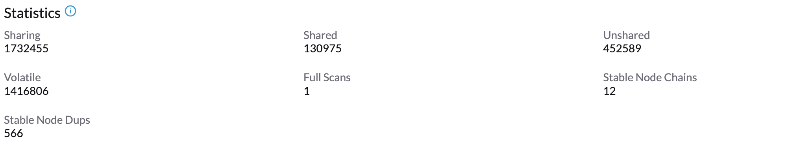
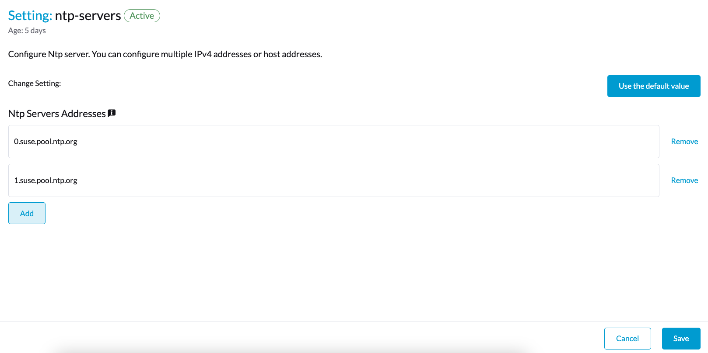
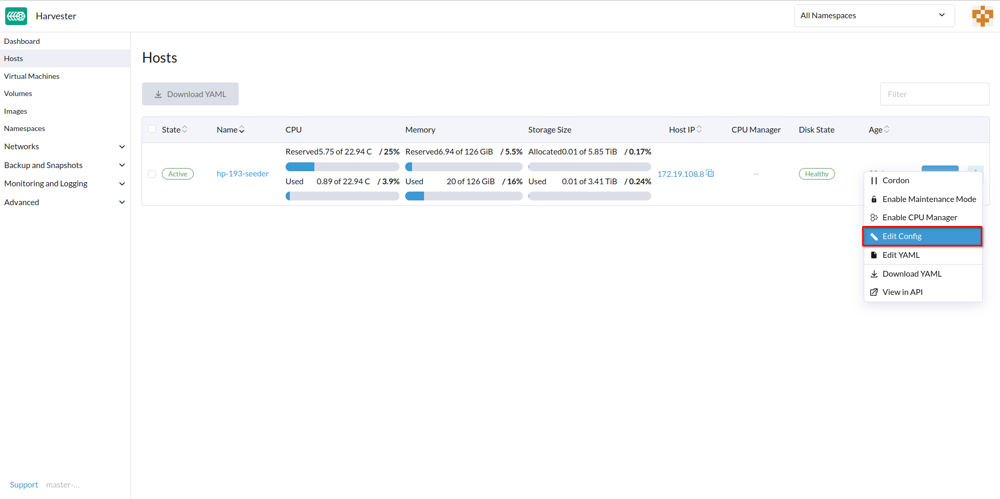

|
この文書は自動機械翻訳技術を使用して翻訳されています。 正確な翻訳を提供するように努めておりますが、翻訳された内容の完全性、正確性、信頼性については一切保証いたしません。 相違がある場合は、元の英語版 英語 が優先され、正式なテキストとなります。 |
ホスト管理
ユーザーはホストページからSUSE Virtualizationノードを表示および管理できます。最初のノードは常にクラスターの管理ノードとしてデフォルト設定されます。ノードが3つ以上ある場合、最初に参加した2つのノードは自動的に管理ノードに昇格し、HAクラスターを形成します。
|
SUSE VirtualizationはKubernetesの上に構築され、etcdをデータベースとして使用しているため、管理ノードが3つある場合の最大ノード障害耐性は1です。 |

SUSE Virtualizationはシステムレベルの操作のためにCPUリソースを予約しているため、*CPU*列に記載されているコアの総数は、各ホストの実際のコア数よりもわずかに少なくなっています。詳細については、共有CPUプールの計算を参照してください。
ノードメンテナンス
管理者ユーザーはメンテナンスモードを有効にできます（*⋮ > メンテナンスモードを有効にする*を選択）ノードからすべての仮想マシンを自動的に追い出します。このモードはバッチマイグレーションを利用して、ライブマイグレーション可能な仮想マシンを他のノードに移動します。これは、再起動、ファームウェアをアップグレードする、またはハードウェアコンポーネントの交換が必要な場合に便利です。この機能を使用するには、少なくとも2つのアクティブノードが必要です。
移行できない仮想マシンがノードのメンテナンスモードの有効化を妨げる可能性があります。この場合、該当する仮想マシンを特定し、手動でシャットダウンする必要があります。詳細については、ライブマイグレーションを参照してください。
個々のVMを他のノードにマイグレーションするのではなくシャットダウンさせるには、ラベル`harvesterhci.io/maintain-mode-strategy`と次のいずれかの値をそのVMに追加します：
-
Migrate:VMをクラスター内の別のノードにライブマイグレーションします。ラベル`harvesterhci.io/maintain-mode-strategy`が設定されていない場合、これはデフォルトの動作です。 -
ShutdownAndRestartAfterEnable:ノードがメンテナンスモードに切り替わった後、VMを再起動します。VMは別のノードにスケジュールされます。 -
ShutdownAndRestartAfterDisable:メンテナンスモードが有効なときにVMをシャットダウンし、メンテナンスモードが無効なときにVMを再起動します。VMは同じノードに留まります。 -
Shutdown:メンテナンスモードが有効なときにVMをシャットダウンします。VMは再起動するのではなく、電源がオフのままになります。
*メンテナンスモードを有効にする*画面で、ノード上のすべてのVMを強制的にシャットダウンできます。これは、`harvesterhci.io/maintain-mode-strategy`ラベルを使用して個別の設定を無効にします。
VMをシャットダウンする前に特別なコマンドを実行するには、 コンテナライフサイクルフック `PreStop`を使用することを検討してください。

ノードのコーデン
コーデンされたノードは、スケジュール不可としてマークされます。コーデンは、新しいワークロードがノードにスケジュールされるのを防ぎたいときに便利です。ノードをアンコーデンして、再びスケジュール可能にすることができます。

ノードの削除
|
SUSE Virtualizationクラスターからノードを削除する前に、残りのノードが削除されるノードからのワークロードを引き受けるのに十分な計算およびストレージリソースを持っているかどうかを確認してください。以下の内容を確認してください。
残りのノードに十分なリソースがない場合、ノードを削除するとVMが移行に失敗し、ボリュームが劣化する可能性があります。 |
1.ノードがクラスターから削除できるかどうかを確認してください。
クラスター内の他のノードの数量と可用性に応じて、コントロールプレーンノードを安全に削除できます。
-
クラスターには3つのコントロールプレーンノードと1つ以上のワーカーノードがあります。
コントロールプレーンノードを削除すると、ワーカーノードがコントロールプレーンノードに昇格します。SUSE Virtualizationは、クラスターに参加する各ノードに役割を割り当てることを可能にします。以前のバージョンでは、ワーカーノードがランダムに昇格されていました。特定のノードを昇格させたい場合は、役割管理および設定ファイルを参照してください。
自動ノード昇格は、コントロールプレーンノードがクラスターから削除されたときのみ発生します。これは、ノードがヘルスチェックの失敗により利用できなくなる状況を含みません。不健康なノードはその役割を保持します。
-
クラスターには3つのコントロールプレーンノードがあり、ワーカーノードはありません。
コントロールプレーンノードを削除する前に、新しいノードをクラスターに追加する必要があります。これにより、クラスターは常に3つのコントロールプレーンノードを持ち、1つのコントロールプレーンノードが失敗しても過半数を形成できることが保証されます。
-
クラスターには2つのコントロールプレーンノードしかなく、ワーカーノードはありません。
この状況でコントロールプレーンノードを削除することは推奨されません。なぜなら、単一ノードクラスターではetcdデータが複製されないからです。単一ノードのエラーは、etcdが過半数を失い、クラスターをシャットダウンさせる原因となる可能性があります。
2.ボリュームのステータスを確認してください。
-
埋め込み SUSE Storage UI にアクセスします。
-
*ボリューム*画面に移動します。
-
すべてのボリュームの状態が 正常 であることを確認してください。
3.削除するノードからレプリカを追い出します。
-
埋め込み SUSE Storage UI にアクセスします。
-
ノード 画面に移動します。
-
削除したいノードを選択し、操作 列のアイコンをクリックして、ノードとディスクを編集 を選択します。
-
次の設定を行います。
-
ノードスケジューリング:*無効化* を選択します。
-
追い出し要求、*真*を選択します。
-
-
［保存］をクリックします。
-
ノード 画面に戻り、削除するノードの レプリカ 値が 0 であることを確認します。
|
残りのノードが削除するノードからレプリカを受け入れられない場合、追い出しは完了できません。この場合、いくつかのボリュームは、クラスターにノードを追加するまで*劣化*状態のままになります。 |
4.移行できない仮想マシンを管理します。
移行できない仮想マシンがあるか確認してください。
|
5.削除するノードからワークロードを追い出します。
ノードでメンテナンスモードを有効にすると、仮想マシンとワークロードが自動的にライブマイグレーションされます。他のノードに仮想マシンを手動でライブマイグレーションすることもできます。
ノードの状態が*メンテナンス*であれば、すべてのワークロードは正常に追い出されています。

|
クラスターにコントロールプレーンノードが2つしかない場合、SUSE Virtualizationはどのノードでもメンテナンスモードを有効にすることを許可しません。削除するノードを手動で排出するには、次のコマンドを使用します： kubectl drain <node_name> --force --ignore-daemonsets --delete-local-data --pod-selector='app!=csi-attacher,app!=csi-provisioner' 再度、この状況でコントロールプレーンノードを削除することは*推奨されません*。etcdデータは複製されていません。単一ノードのエラーは、etcdが過半数を失い、クラスターをシャットダウンさせる原因となる可能性があります。 |
6.RKE2サービスを削除し、ノードをシャットダウンします。
-
ルートアカウントを使用してノードにログインします。
-
スクリプト`/opt/rke2/bin/rke2-uninstall.sh`を実行して、ノード上で実行中のRKE2サービスを削除します。
-
ノードをシャットダウンします。
7.ノードを削除します。
-
UIで、ホスト画面に移動します。
-
削除したいノードを見つけて、⋮ → 削除をクリックします。

|
ノードのハード削除に関する 既知の問題があります。 解決され次第、このステップをスキップできます。 |
役割管理
ハードウェアの問題により、管理ノードを交換する必要が生じる場合があります。SUSE Virtualizationは次の役割を導入することでプロセスを改善します:
-
管理:SUSE Virtualizationがノードを管理ノードに昇格させる際に、そのノードが優先されるようにします。
-
ウィットネス:特定のクラスター内でノードをウィットネスノード（etcdノードとしてのみ機能）に制限します。
-
ワーカー:特定のクラスター内でノードをワーカーノード（管理ノードに昇格しない）に制限します。
|
SUSE Virtualizationは現在、クラスター内にウィットネスノードを1つだけ許可しています。 |
ノードに役割を割り当てる方法の詳細については、ISOインストールを参照してください。
マルチディスク管理
追加ディスクを追加
ユーザーは、ホスト編集ページから複数のディスクを追加のデータボリュームとして表示および追加できます。
-
*ホスト*ページに移動します。
-
変更したいノードで、*⋮ → 設定を編集*をクリックします。

-
*ストレージ*タブを選択し、*ディスクを追加*をクリックします。

SUSE Virtualizationは追加ディスクとしてパーティションを追加することをサポートしていません。追加ディスクとして追加したい場合は、最初にすべてのパーティションを削除してください（例：`fdisk`を使用）。
-
ディスクのプロビジョナーを選択してください。
-
LonghornV1 (CSI):これはデフォルトのプロビジョナーです。

ブロックデバイスが一度も強制フォーマットされていない場合は、*強制フォーマット*を*はい*に設定する必要があります。

-
LVM:ワークロードのために永続ボリュームを作成する際にCSIドライバーLVM（実験的）を使用する場合は、このプロビジョナーを選択してください。

-
-
［保存］をクリックします。
-
ホストの詳細画面で、ディスクが追加され、正しいプロビジョナーが設定されていることを確認してください。
特定のノードやディスクにSUSE Storageボリュームデータを保存したい場合は、ストレージタグを追加することもできます。ストレージタグは、*LonghornV1 (CSI)*および*LonghornV2 (CSI)*プロビジョナーでのみ使用できます。


|
SUSE Virtualizationがディスクを識別するためには、各ディスクに一意の WWNが必要です。そうでない場合、SUSE Virtualizationはディスクの追加を拒否します。 ディスクにWWNがない場合は、`EXT4`ファイルシステムでフォーマットしてSUSE Virtualizationがディスクを認識できるようにすることができます。 |
+
|
SUSE VirtualizationをQEMU環境でテストしている場合は、QEMU v6.0以降を使用する必要があります。以前のバージョンのQEMUは、NVMeディスクエミュレーションに対して常に同じWWNを生成します。これにより、上記の説明のようにSUSE Virtualizationが追加ディスクを追加しない原因となります。ただし、SCSIコントローラーを使用して仮想ディスクを追加することは可能です。WWN情報は、ディスク接続操作と共に手動で追加することができます。詳細については、 スクリプトを参照してください。 |
ストレージタグ
ストレージタグ機能を使うと、特定のノードやディスクだけをSUSE Storageボリュームデータの保存に利用できます。例えば、高パフォーマンスを必要とするデータは、fast、ssd、または`nvme`のタグが付けられた高性能ディスク、または`baremetal`のタグが付けられた高性能ノードのみを使用できます。
この機能はディスクとノードの両方をサポートします。
セットアップ
タグは、ホストページのSUSE Virtualization UIを通じて設定できます：
-
Hosts->Edit Config-> `Storage`をクリックします。 -
`Add Host/Disk Tags`をクリックして入力を開始し、エンターキーを押して新しいタグを追加します。
-
タグを更新するには、`Save`をクリックします。
-
StorageClassesページで、新しいストレージクラスを作成し、`Node Selector`および`Disk Selector`フィールドで定義されたタグを選択します。
ノードまたはディスク上の既存のスケジュール済みボリュームは、新しいタグの影響を受けません。
|
ボリュームに複数のタグが指定されている場合、ディスクおよびそのディスクが属するノードは、すべての指定されたタグを持っている必要があります。 |
ディスクを削除する
ディスクを削除する前に、まずSUSE Storageレプリカをディスクから追い出す必要があります。
|
レプリカデータは、高可用性を維持するために自動的に別のディスクに再構築されます。 |
削除するディスクを特定します。
-
*ホスト*ページに移動します。
-
ディスクを含むノードで、ノード名を選択し、*ストレージ*タブに移動します。
-
削除したいディスクを見つけます。
/dev/sdb`を削除し、ディスクのマウントポイントが/var/lib/harvester/extra-disks/1b805b97eb5aa724e6be30cbdb373d04`であると仮定しましょう。

レプリカを追い出します（SUSE Storageダッシュボード）
-
このセッションに従って、埋め込まれたSUSE Storageダッシュボードを有効にしてください。
-
SUSE Storageダッシュボードにアクセスし、*ノード*ページに移動します。
-
ディスクを含むノードを展開します。マウントポイント`/var/lib/harvester/extra-disks/1b805b97eb5aa724e6be30cbdb373d04`がディスクのリストにあることを確認してください。

-
*ノードとディスクを編集*を選択します。

-
削除したいディスクまでスクロールします。
-
`Scheduling`を`Disable`に設定します。
-
`Eviction Requested`を`True`に設定します。
-
*保存*を選択します。削除アイコンを選択しないでください。

-
-
ディスクは無効になります。ディスクのレプリカ数が`0`になるまでお待ちください。その後、ディスク削除の手続きを進めてください。


トポロジーのスプレッド制約
ノードラベル は、各ノードが属するトポロジー領域を特定するために使用されます。SUSE Virtualization UI で topology.kubernetes.io/zone のようなラベルを設定できます。
-
ホスト に移動します。
-
対象ノードを選択し、次に ⋮ → 設定を編集 を選択します。
-
ラベル タブで、ラベルを追加 をクリックし、ラベル
topology.kubernetes.io/zoneと値を指定します。 -
［保存］をクリックします。
ラベルは、対応する SUSE Storage ノードと自動的に同期されます。
ヒュージページ
ヒュージページは、カーネルがデフォルトの 4 KB よりもはるかに大きなチャンクでメモリを割り当てることを可能にすることで、Linux のメモリ管理を強化します。大きなページサイズは、カーネルがメモリ割り当てを処理するために必要な CPU 時間を削減することで効率を向上させます。これにより、全体的なシステムパフォーマンスが向上する可能性があります。
ヒュージページには 2 種類あります：
-
永続的または静的：関連するカーネルブートパラメータまたは SUSE Virtualization 設定に基づいて事前に割り当てられます。
-
匿名または透過的：カーネルによって自動的に割り当ておよび解放されます。
各ノードの現在のヒュージページ割り当てに関する情報を表示できます。
-
SUSE Virtualization UIで、*Hosts*画面に移動します。
-
ターゲットノードをクリックし、次に*Hugepages*タブを選択します。
*Hugepages*タブの情報は、2つのセクションに分かれています：
-
Meminfo：匿名（透過的）ヒュージページの使用中のメモリの合計量、デフォルトのヒュージページサイズ、および永続的（静的）ヒュージページに関する詳細を表示します。
*Anonymous Hugepages (bytes)*フィールドは通常、大きな値を示し、カーネルが透過的ヒュージページのために自動的に利用するRAMを反映しています。
対照的に、静的に割り当てられたヒュージページを表す*Total Hugepages*フィールドは、通常`0`のままです。ただし、Longhorn V2データエンジンが有効になっている場合、この値は`1024`に変わります。
-
Transparent Hugepages：現在の透過的ヒュージページの設定を表示します。
以下の表は、各設定のオプションとデフォルト値を示しています：
オプション サポートされている値 デフォルト値 有効化済み
Always、Madvise、NeverAlwaysShared Memory Enabled
Always,Within Size,Advise,Never,Deny,ForceNeverDefragmentation
Always,Defer,Defer+Madvise,Madvise,NeverMadvise各ノードの設定を変更するには、*⋮ → Edit Config*を選択し、次に*Hugepages*タブをクリックします。
オプションに関する詳細は、Linuxカーネルドキュメントの Transparent Hugepage Supportを参照してください。
Ksmtunedモード
Ksmtunedは、各ノードでKsmtunedを実行するためにDaemonSetとして展開されたKSM自動化ツールです。利用可能なメモリの割合（i.e. Threshold Coefficient）を監視することによって、KSMを開始または停止します。デフォルトでは、各ノードUIでKsmtunedを手動で有効にする必要があります。ノードUIからKSM統計を1-2分後に確認できます。（詳細については KSMを確認してください）
クイック実行
-
*Hosts*ページに移動します。
-
変更したいノードで、*⋮ → Edit Config*をクリックします。
-
*Ksmtuned*タブを選択し、*Run*を*Run Strategy*で選択します。
-
（オプション）必要に応じて*閾値係数*を変更できます。

-
*保存*をクリックして更新します。
-
約1～2分待った後、*Your Node → Ksmtuned tab*をクリックして*統計*を確認できます。

パラメータ
Run Strategy:
-
*停止:*KsmtunedとKSMを停止します。VMは共有メモリページを引き続き使用できます。
-
*次のスクリプトを実行します。*Ksmtunedを実行します。
-
*プルーニング:*Ksmtunedを停止し、KSMメモリページをプルーニングします。
閾値係数: 使用可能なメモリの割合を設定します。使用可能なメモリが閾値未満の場合、KSMが開始されます。それ以外の場合、KSMは停止します。
*ノード間のマージ:*は、異なるNUMAノードからのページをマージできるかどうかを指定します。
モード:
-
*標準:*デフォルトモード。制御ノードksmdは、単一のCPUの約20%を使用します。次のパラメータを使用します:
Boost: 0
Decay: 0
Maximum Pages: 100
Minimum Pages: 100
Sleep Time: 20-
*高性能:*ノードksmdは、単一のCPUの20%から100%を使用し、スキャンとマージの効率が高いです。次のパラメータを使用します:
Boost: 200
Decay: 50
Maximum Pages: 10000
Minimum Pages: 100
Sleep Time: 20-
*カスタマイズ:*設定をカスタマイズして、望むパフォーマンスを実現できます。
Ksmtunedは、KSMの効率を制御するために以下のパラメータを使用します：
| パラメータ | 説明 |
|---|---|
ブースト |
利用可能なメモリが*閾値係数*未満の場合、スキャンされたページの数は毎回増加します。 |
減衰 |
利用可能なメモリが*閾値係数*を超える場合、スキャンされたページの数は毎回減少します。 |
最大ページ数 |
スキャンごとの最大ページ数。 |
最小ページ数 |
スキャンごとの最小ページ数であり、最初の実行のための設定でもあります。 |
スリープ時間（ms） |
2回のスキャンの間隔で、次の式で計算されます（スリープ時間 * 16 * 1024 * 1024 / 総メモリ）。最小：10ms。 |
例えば、512GiBのメモリノードが以下のパラメータを使用していると仮定します:
Boost: 300
Decay: 100
Maximum Pages: 5000
Minimum Pages: 1000
Sleep Time: 50Ksmtunedが起動すると、KSMの`pages_to_scan`を1000（最小ページ数）に初期化し、`sleep_millisecs`を10に設定します（50 * 16 * 1024 * 1024 / 536870912 KiB < 10）。
利用可能なメモリが*閾値係数*を下回ると、KSMが開始します。実行中であることを検出した場合、`pages_to_scan`は毎分300（ブースト）増加し、5000（最大ページ数）に達するまで続きます。
KSMは、利用可能なメモリが*閾値係数*を超えると停止します。停止していることを検出した場合、`pages_to_scan`は毎分100ずつ減少し、1000（最小ページ数）に達するまで続きます。
NTP設定
時間同期は、分散クラスターアーキテクチャの重要な側面です。このため、SUSE VirtualizationはNTP設定を簡単に構成する方法を提供します。
SUSE Virtualizationは、SUSE Virtualization UI設定画面でのNTP構成をサポートしています（Advanced > Settings）。いつでもSUSE Virtualizationクラスター全体のNTP設定を構成でき、設定はクラスター内のすべてのノードに適用されます。

複数のNTPサーバーを一度に設定できます。

Kubernetesノードの`node.harvesterhci.io/ntp-service`注釈で設定を確認できます：
-
ntpSyncStatus:NTPサーバーへの接続の状態（可能な値：disabled、synced`および`unsynced） -
currentNtpServers:既存のNTPサーバーのリスト$ kubectl get nodes harvester-node-0 -o yaml |yq -e '.metadata.annotations.["node.harvesterhci.io/ntp-service"]' {"ntpSyncStatus":"synced","currentNtpServers":"0.suse.pool.ntp.org 1.suse.pool.ntp.org"}
|

クラウドネイティブノード構成
SUSE Virtualizationをインストールした後、1つ以上のノードをカスタマイズする必要があるかもしれません。このプロセスは通常、ランタイム構成の更新と、各ノードの`/oem`ディレクトリ内のファイルの変更を伴い、再起動後に変更を持続させます。
これらのカスタマイズはKubernetesマニフェストに記述でき、その後kubectlや SUSE® Rancher Prime: Continuous Deliveryのような他のGitOps中心のツールを使用して基盤となるクラスターに適用できます。
|
設定ミスは、SUSE Virtualizationノードの起動能力を損なう可能性があり、クラスター全体の安定性を損なうことさえあります。このような問題を防ぐために、Elementalツールキットのドキュメントを読み、 Elementalを正しくカスタマイズする方法を学ぶことができます。 |
CloudInitリソースの作成
SUSE Virtualizationノードのカスタマイズは、あなたの創造性とElementalツールキットのマークアップが文法的に表現できるものにのみ制約されます。したがって、ドキュメントは可能なカスタマイズと使用例の網羅的なリストを提供することはできません。
例:すべてのノードのデフォルト`rancher`ユーザーにSSH認証キーを追加したいです。
CloudInitリソースのためのKubernetesマニフェストを作成することから始めます。
file: ssh_access.yaml
apiVersion: node.harvesterhci.io/v1beta1
kind: CloudInit
metadata:
name: ssh-access
spec:
matchSelector: {}
filename: 99_ssh.yaml
contents: |
stages:
network:
- authorized_keys:
rancher:
- ssh-ed25519 AAAA...このマニフェストは、_すべてのノード_に適用されるElemental cloud-initドキュメントを説明します（空の`matchSelector: {}`フィールドはすべてに一致します）。.spec.contents`フィールドのYAMLドキュメントは/oem/99_ssh.yaml`にレンダリングされます（`.spec.filename`フィールドのためです）。
コマンド`kubectl apply -f ssh_access.yaml`を使用してこの例を適用します。
|
関連するSUSE Virtualizationノードを再起動して、Elementalツールキットの実行者がブート時に新しい設定を適用できるようにします。 |
CloudInitリソース仕様
| フィールド | 必須 | 説明 |
|---|---|---|
matchSelector |
はい |
構成変更を受け取るノードを指定することを可能にする設定。 |
ファイル名 |
はい |
`/oem`に表示されるファイルの名前。 |
内容 |
はい |
`/oem`にファイルとしてレンダリングされるElementalツールキットのcloud-initスタイルのファイル。 |
一時停止 |
いいえ |
`true`に設定されている場合、ファイルは変更されてもノード上で更新されません。 |
`matchSelector`フィールドは、ラベルに基づいて特定のノードまたはノードのグループをターゲットにするために使用できます。
例:
matchSelector:
kubernetes.io/hostname: "harvester-node-1"|
`matchSelector`フィールドにリストされているすべてのラベルのキーと値のペアは、対象のノードのラベルと一致する必要があります。 次の例では、`matchSelector`は`harvester-node-1`と一致しますが、そのノードが`example.com/role`ラベルを持ち、値が`role-a`である場合のみです。 |
CloudInitリソースの更新
`kubectl edit`コマンドを使用してCloudInitリソースを更新できます。ただし、`matchSelector`フィールドがカスタマイズから1つ以上のノードを除外するように更新される場合は注意が必要です。カスタマイズのロールバックに関する[Deleting a CloudInit Resource]セクションの注意事項を参照してください。
# kubectl edit cloudinit CLOUDINIT_NAMECloudInitリソースの削除
`kubectl delete`コマンドを使用してSUSE VirtualizationクラスターからCloudInitリソースを削除できます。
# kubectl delete cloudinit CLOUDINIT_NAME|
SUSE Virtualizationは、CloudInitリソースがElementalツールキットによるカスタマイズとして表現可能な、任意のシェルコマンドなどあらゆる内容を記述できるため、以前に説明されたカスタマイズを「ロールバック」することはできません。 [Creating a CloudInit Resource]の例では、YAMLファイルに`authorized_keys`スタンザが含まれています。これはElementalツールキットにおける追加専用のアクションです。リソースが変更または削除されると、`authorized_keys`内のSUSE Rancher Primeファイルには古い公開鍵が含まれたままになります。 ノードを再起動する前に、変更をロールバックするCloudInitリソースを修正または作成する責任があります。 |
CloudInitロールアウトのトラブルシューティング
Elementalツールキットのcloud-initドキュメントが`/oem`に表示されない場合や、期待される内容が含まれていない場合、CloudInitリソースのステータスブロックに役立つヒントが含まれている可能性があります。
# kubectl get cloudinit CLOUDINIT_NAME -o yamlstatus:
rollouts:
harvester-dngmf:
conditions:
- lastTransitionTime: "2024-02-28T22:31:23Z"
message: ""
reason: CloudInitApplicable
status: "True"
type: Applicable
- lastTransitionTime: "2024-02-28T22:31:23Z"
message: Local file checksum is the same as the CloudInit checksum
reason: CloudInitChecksumMatch
status: "False"
type: OutOfSync
- lastTransitionTime: "2024-02-28T22:31:23Z"
message: 99_ssh.yaml is present under /oem
reason: CloudInitPresentOnDisk
status: "True"
type: Present`harvester-node-manager`ネームスペース内の`harvester-system`ポッドには、ノードにファイルをレンダリングできない理由に関するヒントが含まれている場合があります。 このポッドはデーモンセットの一部であるため、関心のあるノードで実行されているポッドを確認する価値があるかもしれません。
リモートコンソール
リモートサーバー管理のためのコンソールのURLを設定できます。このコンソールは、物理的なアクセスが制限されている環境で特に便利です。
-
SUSE Virtualization UIで、*ホスト*に移動します。
-
ターゲットホストを見つけて、*⋮ → 設定を編集*を選択します。

-
*コンソールURL*を指定し、*保存*をクリックします。
例（HPE iLOを使用）：

-
リモートサーバーにアクセスするには、*コンソール*をクリックしてください。

期限切れの証明書を回転させる
RKE2の証明書が期限切れの場合、auto-rotate-rke2-certificates`設定を使用して回転させることはできません。この設定は、クラスター（`cluster.provisioning）が`Ready`にマークされているときのみ機能します。
> kubectl get cluster.provisioning -n fleet-local local -o yaml | yq -e '.status.conditions[] | select(.type=="Ready")'
lastUpdateTime: "2025-10-22T06:41:33Z"
status: "True"
type: Ready`status`フィールドの値が`False`の場合、各ノードで次の手順に従って手動で証明書を回転させる必要があります：
-
ルートアカウントを使用してノードにログインします。
-
RKE2サービスを停止します。
-
管理ノード
systemctl stop rke2-server -
ワーカーノード
systemctl stop rke2-agent
-
-
RKE2の証明書を回転させます。
/opt/rke2/bin/rke2 certificate rotate -
RKE2サービスを開始します。
-
管理ノード
systemctl start rke2-server -
ワーカーノード
systemctl start rke2-agent
-
-
`rancher-system-agent`サービスを再起動します。
systemctl restart rancher-system-agent